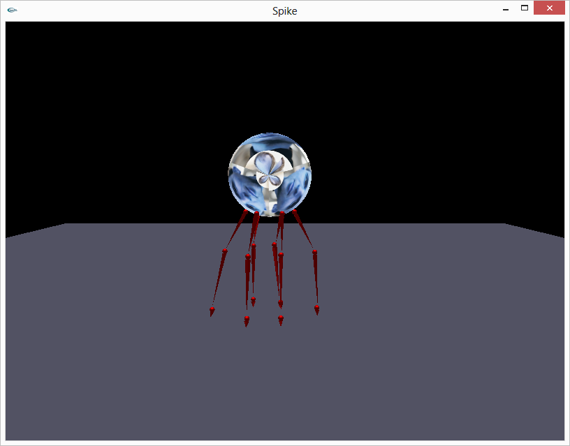
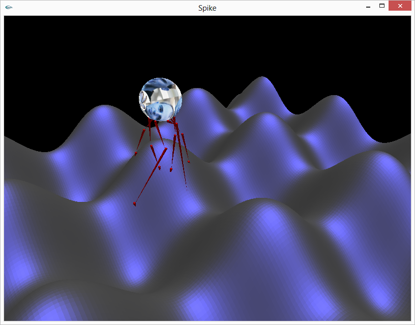

The thing walking non-chalantly
This is the most basic version of our beloved spider. It looks at
the surface and finds goal points for all of its arms, and it also
manages to keep the torso (the centroid) within the convex hull of
all of its arms.

The spider touching a sinusoidal surface
Now our little multi-legged monst— I mean beautiful baby will
walk around on a sinusoidal surface, figuring out how to stay above
the surface and not fall away.